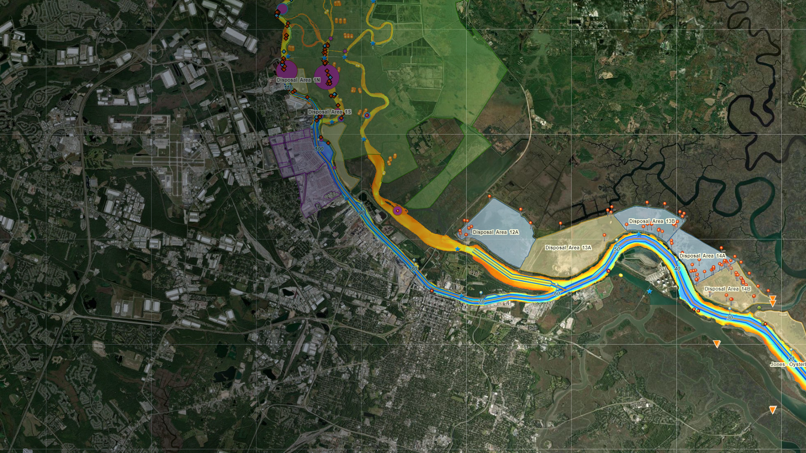
SHEP Monitoring Program
Environmental Monitoring for the Savannah Harbor Expansion Project
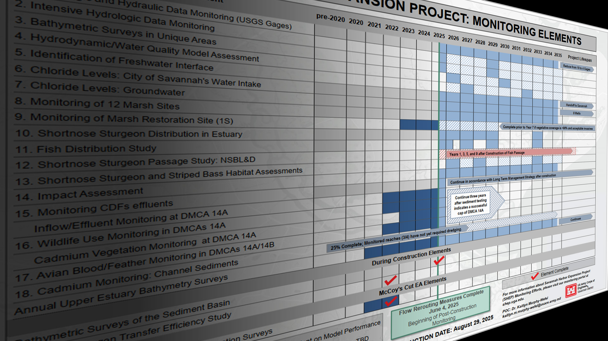
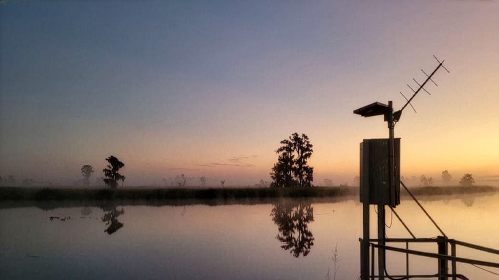
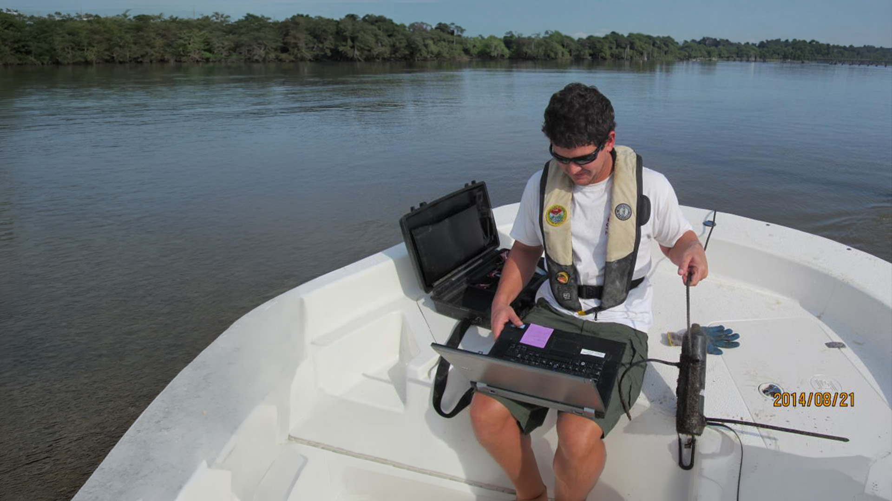
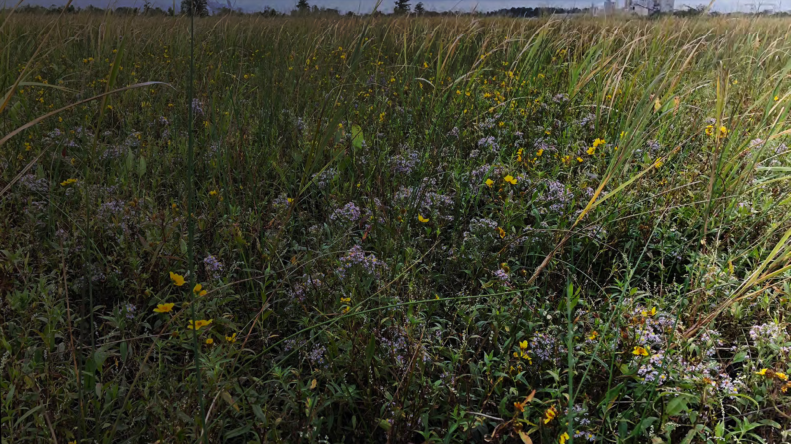
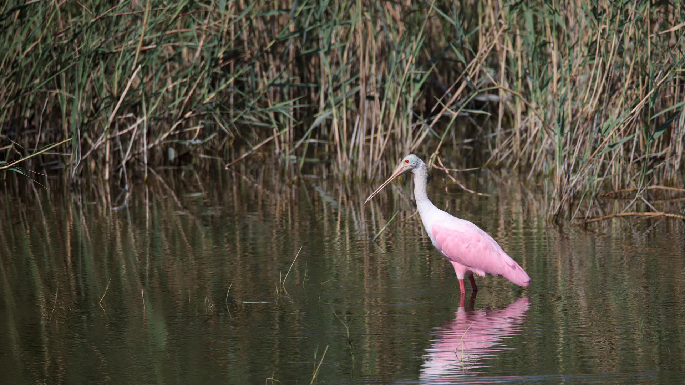


Environmental Monitoring for the Savannah Harbor Expansion Project





The Savannah Harbor Expansion Project (SHEP) deepened the Savannah River Federal Navigation Channel from 42 feet below mean lower low water (MLLW) to 47 feet MLLW. This deepening allows larger and more heavily loaded vessels to call on the harbor with fewer tidal delays.
As part of the SHEP, the US Army Corps of Engineers is conducting environmental monitoring studies. This website provides a comprehensive portal to the monitoring data and associated reports for the natural resource agencies and the general public. Visit the SHEP Homepage to learn more about the project.
SHEP Homepage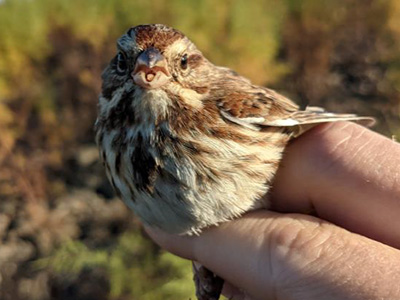
Evaluate potential bioaccumulation of contaminants within higher trophic levels of the estuarine ecosystem.
Reports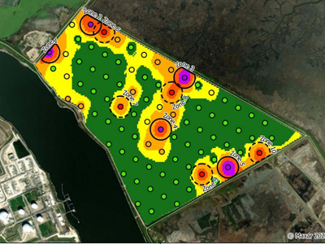
Assesses the presence and spatial distribution of cadmium concentrations in marsh and upland vegetation.
Reports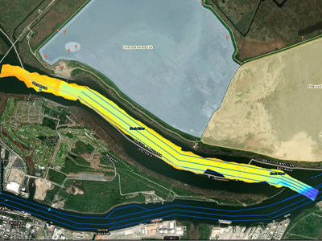
Documents changes in channel depth, morphology, and sediment distribution within the Savannah River navigation channel.
Map Portal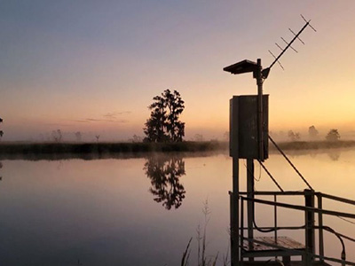
Evaluates temporal and spatial variations in key physicochemical parameters accross a gage station network.
Dashboard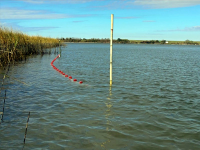
Assesses the spatial and temporal patterns of key estuarine and marine species within the Savannah River system.
Reports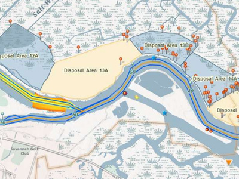
Integrated geospatial framework and tools for visualizing, exploring and disseminating environmental monitoring data.
Reports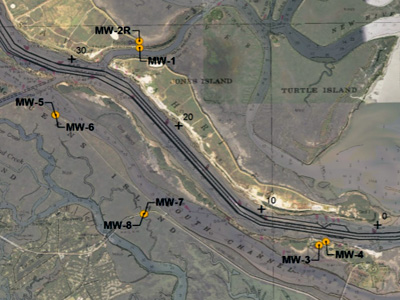
Evaluates potential changes in subsurface water conditions in areas influenced by the SHEP.
Reports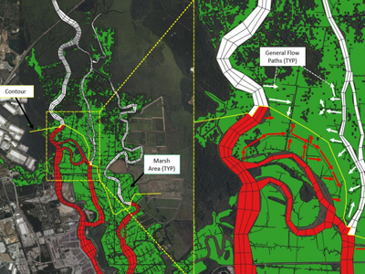
Simulate and evaluate physical and chemical processes within the Savannah River estuary under existing conditions and scenarios.
Reports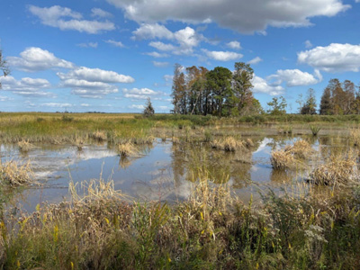
Evaluates the performance of marsh habitat restoration efforts linked to mitigation practices and environmental management.
Reports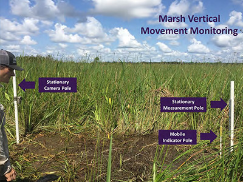
Evaluates the condition and long-term stability of selected and reference tidal marsh locations within the Savannah River estuary.
Reports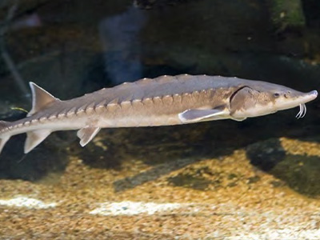
Monitors the spatial and temporal occurrence of Atlantic and shortnose sturgeon within the Savannah River.
Reports